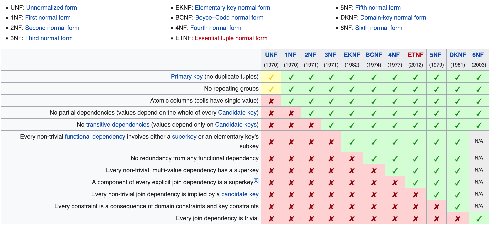

# <div style="text-align:center;font-size: 3em;line-height:3em;"> INFO 610 Fall 2019 </div> <div style="text-align:center;font-size: 1.5em;line-height:1.8em;">Week 2</div> <div style="text-align:center;font-size: 1em;line-height:1.8em;">The Advantage of learning a Good Design Methodology</div> --- # Why do we learn good a good methodology? Trial and Error? Learn from others mistakes. <ul> <li>Learn skills to make a sound database structure</li> <li>Organized technique to step through the process</li> <li>Keep missteps and design iterations infrequenet and <strong>up front.</strong></li> <li>Easier and reduces the amount of time to design</li> <li>Understand your RDBMS and your domain better</li> </ul> --- # Objectives of a Good Design <ul> <li>Database supports your planned and unplanned data needs</li> <li>Tables are created properly and efficiently</li> <li>Data integrity is imposed at the field, table and relationship levels</li> <li>Database supports business rules relevant to the organization</li> <li>Database lends itself to future growth</li> </ul> --- # Benefits of a Good Design <ul> <li>Structure is easy to modify and maintain.</li> <li>Data is easy to modify.</li> <li>Information is easy to retrieve.</li> <li>End-user applications are easy to develop and build.</li> </ul> --- # Three Phases of Database Design <ul> <li> Requirements Analysis <li> Data Modeling <li> Normalization </ul> --- --- # Requirements Analysis <ul><li>Covered heavily in chapter 5. More to come later.</li></ul> --- # Data Modeling <ul> <li>ER diagrams, will cover more examples as we move through the class.</li> <li>Change of heart regarding Formality: Let's do our best <ul> <li>Rectangles for tables</li> <li>Diamond represents relationship (1:N, 1:1)</li> <li>Vertical line indicates a mandatory relationship</li> <li>Circle represents an optional relationship</li> <li>Diagram on page 33, client MUST be related to an agent, but agent doesn't REQUIRE a client</li> </ul> </li> </ul> --- # Normalization <ul> <li>Decomposing large tables into smaller tables.</li> <li>Eliminate redundant data</li> <li>Eliminate duplicate data</li> </ul> <ul> <li><i>A relvar is in the 3NF if and only if it is in 2NF and every non-key attribute is nontransitively depdendent on the primary key</i><br/></li> </ul> <ul> <li>Fun, eh?</li> </ul> --- # (more) Normalization <i><a href="https://www.essentialsql.com/get-ready-to-learn-sql-database-normalization-explained-in-simple-english/">https://www.essentialsql.com/get-ready-to-learn-sql-database-normalization-explained-in-simple-english/</a></i> <ol> <li>UNF: Each table has a primary key.</li> <li>1NF: The information is stored in a relational table with each column containing atomic values. There are no repeating groups of columns.</li> <li>2NF: The table is in first normal form and all the columns depend on the table’s primary key.</li> <li>3NF: The table is in second normal form and all of its columns are not transitively dependent on the primary key</li> </ol> --- # In picture form? <i><a href="https://en.wikipedia.org/wiki/Database_normalization">https://en.wikipedia.org/wiki/Database_normalization</a></i><br/><br/>  If we have time, we'll walk through the example, otherwise, you should. Great examples on wikipedia! --- # Questions? --- # Next Week Page 525 - Diagrams of this process<br/><br/> Thursday - READING NIGHT! <ul> <li>No official class</li> <li>Will have zoom/remote/office hours, link set up Thursday.. 5:30-6:45</li> <li>Will assist with Docker or Postgres installation</li> <li>Before next tuesday, read Chapter 5, page 89+</li> </ul>